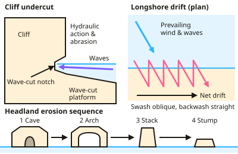

GCSE Geography · Topic 3
UK physical landscapes
U K physical landscapes is about the coasts and rivers that shape Britain, and how we manage them.
We will study coastal processes and landforms, and how coasts are managed with hard and soft engineering.
Then we study river processes and landforms, flooding and hydrographs, and a U K flood management scheme.
- 4 subtopics
- 240 questions
- Free: 3.1 notes and 10 questions
In this topic
- 3.1Coastal landscapesFree below · 65 questions
- 3.2River landscapesOpen in Full Marks · 60 questions
- 3.3Coastal management: hard and soft engineering, managed retreat and a UK coastal case studyOpen in Full Marks · 38 questions
- 3.4River flooding and management: hydrographs, causes, impacts and a UK flood management schemeOpen in Full Marks · 77 questions
3.1 · Free notes
Coastal landscapes

Key points
- Waves are constructive (low energy, building beaches) or destructive (high energy, eroding the coast).
- Erosion processes: hydraulic action, abrasion, attrition and solution. Transport: longshore drift moves sediment along the coast in the direction of the prevailing wind.
- Erosional landforms: headlands and bays, wave-cut notches and platforms, caves, arches, stacks and stumps.
- Depositional landforms: beaches, spits, bars and sand dunes.
- Hard engineering: sea walls, rock armour, groynes and gabions. Soft engineering: beach nourishment, dune regeneration and managed retreat.
- Management decisions weigh cost, effectiveness, environmental impact and the value of what is being protected.
- Weathering breaks down cliff rock: mechanical weathering such as freeze–thaw, chemical weathering such as carbonation (rainwater dissolving limestone) and biological weathering by plant roots.
- Mass movement is the downhill movement of material under gravity. In sliding, material moves down in a straight line; in slumping, saturated soft rock such as clay moves along a curved surface; in a rock fall, fragments break off the cliff face and fall to the base.
In more detail
- Fetch: the distance of open water the wind blows over; south-west England faces a fetch of thousands of kilometres across the Atlantic, giving powerful waves.
- Longshore drift: waves hit the beach at an angle (the swash), but the backwash runs straight down, so sediment zig-zags along the coast — on Holderness, southwards towards Spurn Head.
- Headland sequence: crack → cave → arch → stack → stump, as at Old Harry Rocks in Dorset.
- Spit formation: where the coast changes direction, longshore drift carries sediment out to sea; changes in wind direction curve the end into a hook, as at Spurn Head.
- Fast erosion: the soft boulder-clay cliffs of Holderness retreat by about 1.8 m a year, among the fastest rates in Europe.
Practice
Coastal landscapes: 10 questions
Pick an answer to check it, or open the answer for the explanation.
1. How is a wave-cut notch formed?
- Deposition at the cliff top
- Erosion at the base of a cliff between high and low tide
- Longshore drift
- Weathering of dunes
Show answer
B: Erosion at the base of a cliff between high and low tide. Hydraulic action and abrasion undercut the cliff.
2. What is longshore drift?
- Waves moving directly onshore
- Movement of sediment along the coast by waves approaching at an angle
- Erosion of the sea bed
- Deposition in rivers
Show answer
B: Movement of sediment along the coast by waves approaching at an angle. Swash moves at an angle, backwash returns straight down the beach.
3. Which sequence shows coastal erosion of a headland?
- Stack, arch, cave, stump
- Cave, arch, stack, stump
- Arch, stump, cave, stack
- Stump, stack, arch, cave
Show answer
B: Cave, arch, stack, stump. The arch collapses to leave a stack, which erodes to a stump.
4. Which is a soft engineering strategy?
- Sea wall
- Rock armour
- Beach nourishment
- Groynes
Show answer
C: Beach nourishment. Soft engineering works with natural processes.
5. What are groynes designed to do?
- Absorb wave energy at the cliff
- Trap sediment moved by longshore drift to build up the beach
- Drain water from cliffs
- Replace lost sand directly
Show answer
B: Trap sediment moved by longshore drift to build up the beach. A wider beach then absorbs more wave energy.
6. What is a spit?
- An eroded headland
- A depositional feature extending from the coast, often with a curved end
- A river landform
- A type of cliff
Show answer
B: A depositional feature extending from the coast, often with a curved end. It forms where longshore drift deposits sediment at a change in coastline direction.
7. Which description fits a destructive wave?
- Low energy, strong swash, carries sediment up the beach
- High energy, strong backwash, erodes the coast
- High energy, strong swash, deposits sediment on the beach
- Low energy, weak backwash, builds up the beach
Show answer
B: High energy, strong backwash, erodes the coast. Destructive waves are high energy with a strong backwash that removes material, so they erode the coast. Constructive waves are low energy with a strong swash, so they build beaches.
8. Which process is hydraulic action?
- Rocks thrown by waves against the cliff face
- Rocks colliding and becoming smaller and rounder
- Acids in seawater dissolving rock such as chalk
- Force of water and compressed air in cracks breaking up rock
Show answer
D: Force of water and compressed air in cracks breaking up rock. Hydraulic action is the force of water and compressed air entering cracks, which weakens and breaks the rock. Hurling rocks is abrasion, colliding rocks is attrition, and dissolving is solution.
9. The roof of a sea arch collapses, leaving a tall pillar of rock separated from the headland. What is this landform?
- A bay
- A stack
- A wave-cut platform
- A stump
Show answer
B: A stack. When an arch roof collapses, the detached pillar is a stack. Further erosion later reduces a stack to a stump.
10. On a west–east coast with the sea to the south, waves approach from the south-west. Net movement of sediment by longshore drift is towards the...
- West
- North
- East
- South
Show answer
C: East. Swash carries sediment up the beach at an angle, in the direction of the waves (north-east). Backwash returns it straight down the slope. The zigzag gives a net movement eastwards.
Keep going in Full Marks
Full Marks has 65 questions on Coastal landscapes (55 more than here), set out in practice levels. You also get notes and 3D models for all 4 subtopics of UK physical landscapes, plus games, timed exams and past papers.